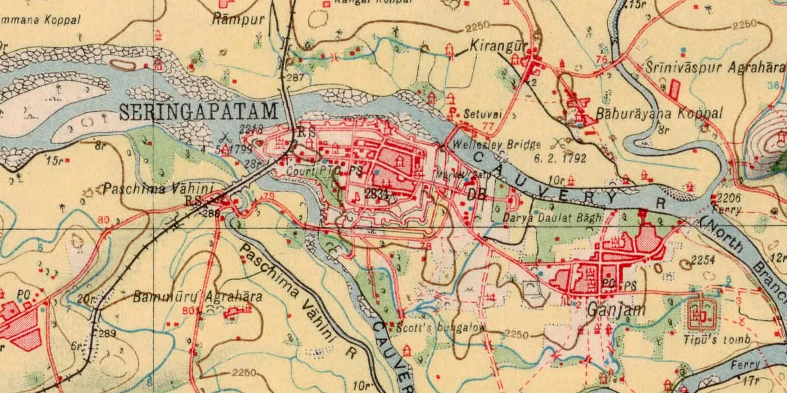
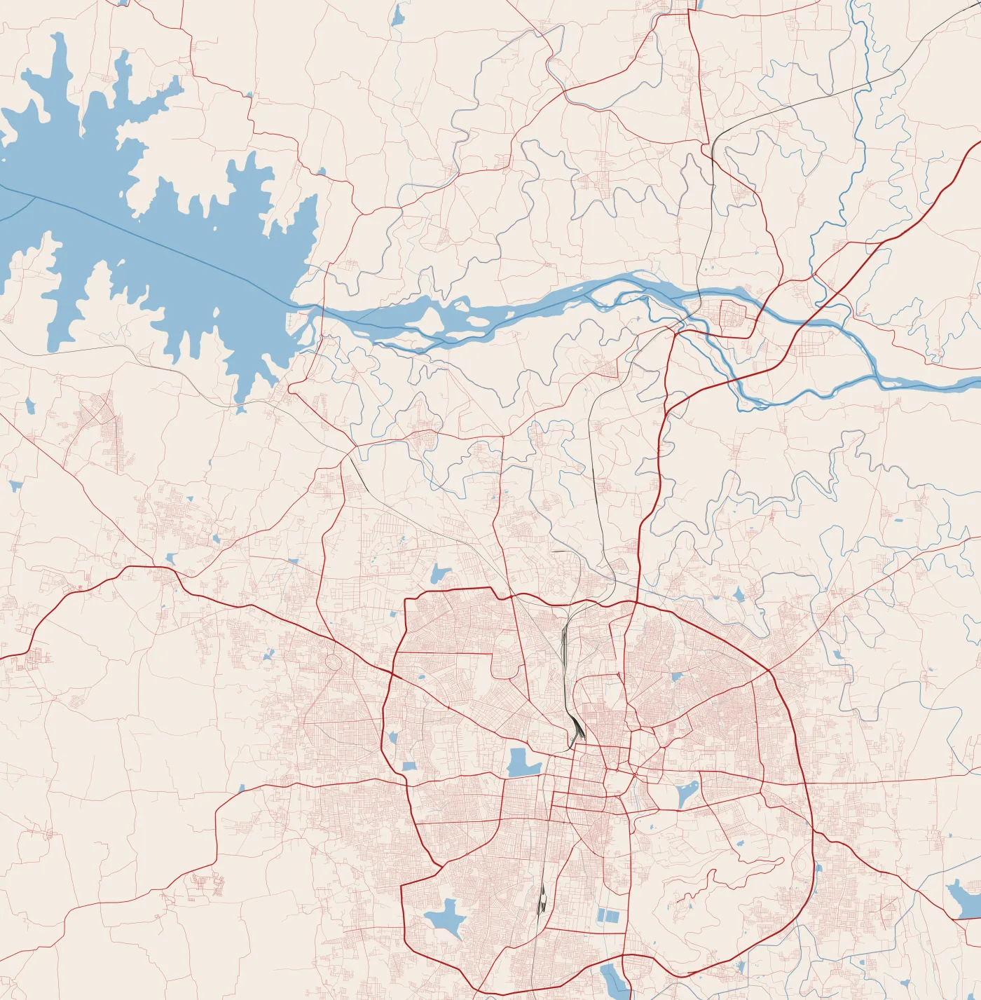
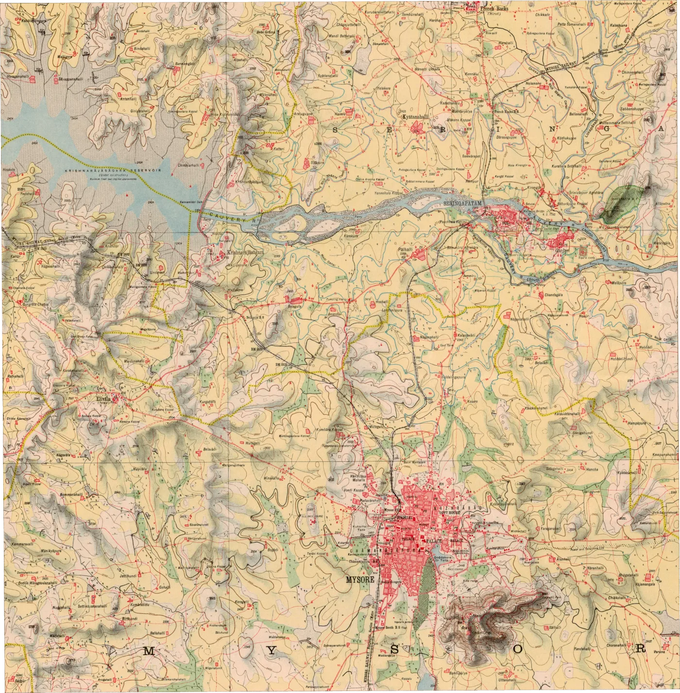

Can a computer find where a century-old Survey of India sheet sits on today's ground? We pitted a learned matcher, a classical one and hand-placed control points against each other. Each was scored in metres at points it never saw.
Read the paper (PDF, 14 pages) Archived on Zenodo · doi:10.5281/zenodo.23572419
The glowing points above are the 61 real anchors LoFTR found in this part of the sheet. Control points were picked by an AI assistant and reviewed unchanged by the author, who later re-picked them blind (Sheet 8).
The 1926 sheet, warped by LoFTR's transform onto a 5 m UTM grid, sits exactly over today's OpenStreetMap. Drag the handle to compare them. The circles are the 12 held-out evaluation points. Each arrow shows a method's error, drawn ten times longer than life so you can see it.
Graticule: modern WGS 84 meridians and parallels every 2.5′. The 1926 sheet's own printed grid sits about 100 m away from these.


Triangles mark the manual fit's 7 control points (hollow triangles: the 2 dropped by quality control). Hover or tap a circle for its numbers.
Each line joins a point on the 1926 sheet (left) to the spot a matcher thinks is the same place on the OSM render (right). Blue lines survived RANSAC; faint red lines were rejected. LoFTR's survivors agree on one transform. SIFT's do not agree on anything.
We pre-aligned 25 tiles using only the sheet's printed corners, then asked each matcher to find correspondences. A match counts as correct if it lands within 600 m of the right place. Random guessing would score 4.31%. SIFT scored 4.75%. At every radius from 200 m to 1 km, SIFT stays within 1.0–1.5 times chance while LoFTR reaches 1.7–14 times.
Share of matches within 1 km of where the printed corners predict, by input size. 768 px was chosen by this rule before any evaluation point existed. At 1536 px the laptop ran out of memory.
Every method was scored on the same 12 points, locked by a SHA-256 hash before any prediction was computed. The truth comes from OSM vector geometry in UTM 43N. LoFTR was closer at 9 of the 12.
| Method · homography | n | Median | Mean | RMSE | Max | P90 | CPU time |
|---|---|---|---|---|---|---|---|
| LoFTR + RANSAC | 12 | 53.9 | 64.2 | 77.4 | 191.7 | 95.9 | ≈20 s |
| Manual control points (7) | 12 | 73.9 | 89.6 | 102.4 | 223.9 | 140.6 | 0.15 s |
| SIFT + RANSAC | 0 | failed | – | – | – | – | ≈15 s |
| Printed corners + ECC* | 12 | 99.5 | 102.4 | 119.7 | 263.1 | – | ≈60 s |
| Printed corners only* | 12 | 169.8 | 169.0 | 173.3 | 258.2 | – | instant |
| ALIKED + LightGlue* | 12 | 54.6 | 85.8 | 104.9 | 201.4 | 183.4 | 9 s match |
| DISK + LightGlue* | 0 | failed | – | – | – | – | 12 s match |
Metres in EPSG:32643. Paired: median difference −31.7 m, exact Wilcoxon p = 0.043, bootstrap 95% CI [−44.0, +2.5] m. The interval includes zero, and no secondary test against this manual fit survives a correction for the 23 secondary tests, so this is suggestive, not settled. Against a manual fit rebuilt from a blind human re-pick, LoFTR wins at every point (Sheet 8). *Added after the evaluation (Sheets 6 and 7).
| Method | Model | Median | RMSE |
|---|---|---|---|
| LoFTR | affine | 42.4 | 76.3 |
| LoFTR | homography | 53.9 | 77.4 |
| Manual | affine | 87.8 | 105.5 |
| Manual | homography | 73.9 | 102.4 |
The extra projective freedom bought nothing measurable on this sheet.
GPU run pending.
The sheet's printed latitudes and longitudes use a pre-WGS 84 Indian datum. Three independent estimates agree on the direction of the shift: our fitting control points, LoFTR's matches, and PROJ's Kalianpur datum parameters.
After the evaluation we tried to break the result. On an image warped by a known transform and matched against itself, LoFTR's own error is 2–3 m and SIFT's 0.2 m. Almost all of the real error comes from the map, a century of change, OSM and our picking, not from the matcher.
None of these checks changed a parameter or a reported number. Details: Section 5 of the paper and results/robustness/.
Hatched bars: the same image warped and matched against itself, so only the matcher can err. Solid bars: the real 1926-to-OSM problem, scored on the 12 held-out points.
Two more matchers and eleven more transform models, chosen by the same rules as before and scored once on the same 12 points. A sparse learned matcher can also cross the style gap, but less reliably. Bending the transform does not help: the limit is the map and a century of change.
Details: Section 7 of the paper and results/extensions/.
Closest to this benchmark: georeferencing by local feature matching with Delaunay consistency (Vaienti, di Lenardo & Kaplan, CaGIS 2025); road-network segmentation plus SuperPoint–SuperGlue alignment, JADIS SuperMapRealigner (Petitpierre, Jan & Guhennec, 2026); alignment for urban change in Paris (Wu et al., 2026); and segmentation across heterogeneous map collections (Petitpierre, 2026). MapAlign differs in aligning to a modern vector render rather than another historical map, in working on a rural Survey of India sheet, and in scoring every method on locked held-out points in metres.
The original control points were proposed by an AI assistant. Afterwards the author re-picked every one of them blind and timed, in a browser tool that centred each window on the printed corners and never showed an earlier pick. The evaluation clicks barely moved. The manual fit did: rebuilt from the new clicks, it lost to LoFTR at every point.
Details: Section 8 of the paper and results/robustness/picker_agreement.json. A second picker, not an independent expert.
None of the 57 candidates in the empty south and city cells was skipped, although many of those features are modern. The two transforms never disagree by more than 155 m there, so when both are 300 m to 1.5 km off, the click is on a different feature, not a georeferencing error. The picks are kept and hashed exactly as recorded, and the kit now says to skip unless sure. The lesson: deciding whether a feature existed in 1926 is the hard part of building a test set.